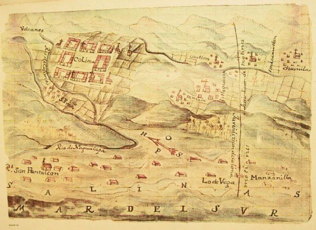
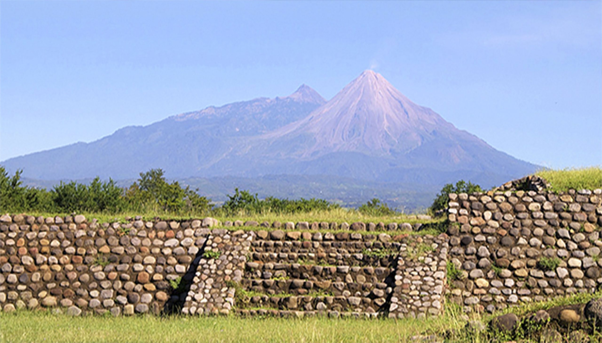
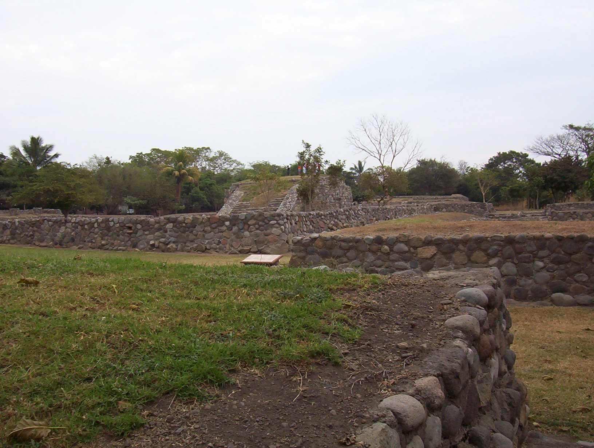
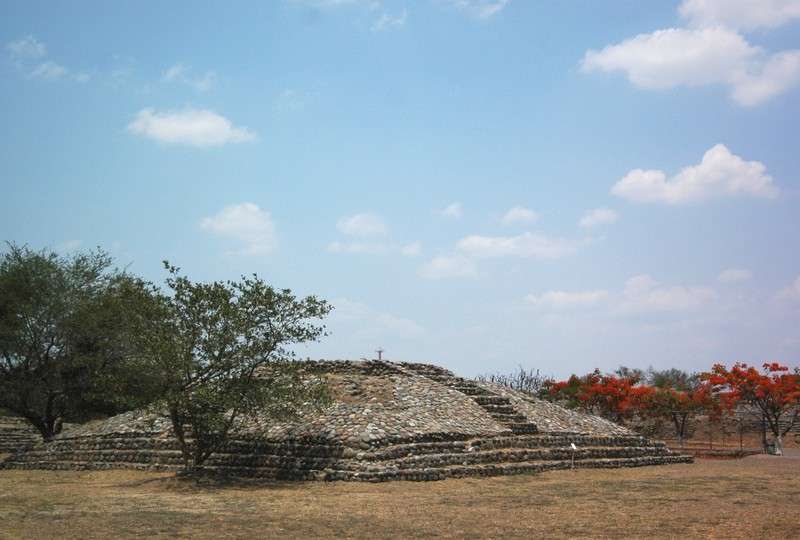

Historia de colima
Ubicados en la etapa de la colonia, los pueblos indígenas son organizados en la villa de Colima, nombrada así por Hernán Cortés en el año de 1523. En ese mismo año los españoles abandonan esa villa y se trasladan más al norte, a la villa de San Sebastián de Colima, hoy conocida como Colima (la capital del estado fundada en 1527), pues ante las inclemencias del calor de Villa de Colima, consideran que Villa de San Sebastián de Colima goza de una mejor ubicación, así como de mejores condiciones climáticas y ambientales, lo que la hace un espacio más generoso para vivir y progresar. Los antecedentes precolombinos del municipio de Colima, según la información ofrecida por el gobierno del estado, son variados y se tienen registros de que este territorio lo habitaron antiguos pueblos indígenas desde —por lo menos— unos 2000 años a. C. y que pueden ser organizados de la siguiente manera:
Complejo Capacha
Asentamiento de un grupo sedentario dedicado a la agricultura y a la producción de cerámica, cuya vida se realizó entre los años 2000 y 1000 a. C.; localizado a seis kilómetros al norte de donde hoy se halla la cabecera municipal, Colima.
Complejo El Chanal
Comprende el desarrollo del grupo indígena más representativo de la región, que se asentó en la comunidad de El Chanal, del cual toma el nombre. En este lugar, a mediados del siglo xx, se descubrió el cuerpo de una pirámide escalonada; al inicio de la década de los noventa, se descubrieron plazas, explanadas, templos y hasta un juego de pelota: evidencias arquitectónicas de un pueblo que había alcanzado un alto grado de evolución. Hacia el tiempo en que llegaron los españoles a Colima, este complejo ya había desaparecido y solo quedaban en el área algunos pueblos indígenas dedicados básicamente a la recolección, la caza y la agricultura –al parecer– sometidos a otra población indígena más poderosa, enclavada en la llanura costera de Tecomán (hoy Tecomán).
La campana
En el sitio se han encontrado vestigios de la fase cerámica denominada capacha, que data del año 1500 a. C.. Destaca la presencia de tumbas de tiro, ofrendas de cerámica, sistemas de drenaje pluvial, avenidas y un centro administrativo y religioso con numerosos monumentos. Los descubrimientos de La Campana fueron expuestos al público por primera vez en 1995. Los españoles descubrieron La Campana en 1524 cuando esta era conocida como Almoloyan, o lugar de fuentes o manantiales.
